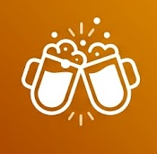

A · Editorial Noturno refinado
Baseline escolhido, agora com bloqueios representados por cadeados acessíveis. Baixa densidade, ritmo editorial e um único acento de ação mantêm o foco no plano vigente.
Pastel &
caldo de cana
B · Assinatura de Brinde · Logo 1
O logo ilustrado vira uma assinatura de convite, com mais respiro e calor humano. A composição é clara e impressa, equilibrando celebração com informação objetiva.
Pastel & caldo de cana
C · Selo de Encontro · Logo 2
O símbolo compacto funciona como selo reconhecível em uma ficha digital. A maior densidade e os módulos aceleram a leitura, aproximando o Convite da familiaridade de uma página de produto.

CONVITE08·AGO
Pastel & caldo de cana
D · Noite em Movimento
Uma síntese nova: editorial no conteúdo, festiva só nos gestos gráficos. O registro é mais expressivo e cultural, sem deixar a marca competir com o resumo operacional.
Pastel & caldo de cana
Respostas ajudam a organizar. Elas não decidem pelo grupo.